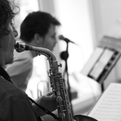
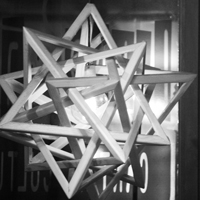
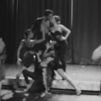

Living in Palma de Mallorca, Spain
Self and quick learner, organized, versatile, curious and dedicated.
Passionate about technology innovations, sci-fi, games, books, human history, ecology, gastronomy.
Since 2012 working as freelancer on Graphic/WebDesign and Frontend.
Native brazilian portuguese, advanced english and spanish.
College in Product Design at Belas Artes de São Paulo.
Side Quests
In 2013 started short-courses in frontend and self taught code with Python, MySQL, Angularjs, MongoDB.
In the second semester of 2015 started a Master degree in Strategic and Innovation Design, but had to close to move to Japan.
2016 to 2018 lived in Japan working together diferents Cultural Centers.
In 2016 started to self taught photography and videomaking.
From 2019 working also as Flamenco Dancer in the hotels of Mallorca, Spain.
Jobs Gallery
Flamenco / Photos
Louise / Music Video
Dance Shows / Photos
Modern Dance / Music Video
Maroko / Photos
Erotik Dance / Music Video
<>
Leave me a message
Now looking for new adventures in others countries in Europe
anaclaulp@gmail.com
+34 695749730
linkedin.com/in/ana-claudia-sanz/